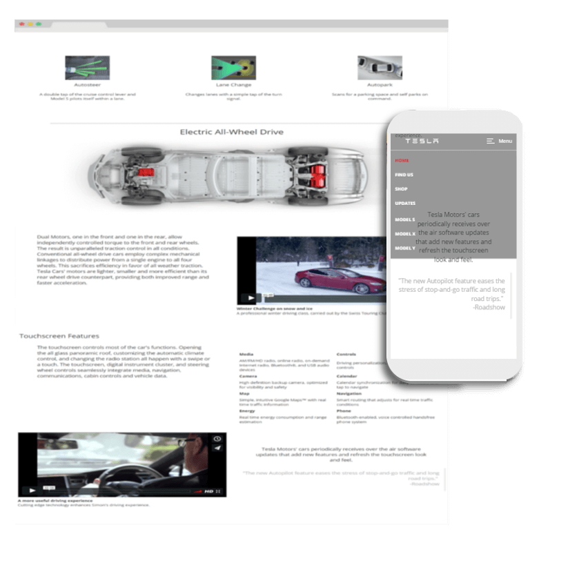

This project was my first project which revolved around recreating the home page for the Tesla Motors website. For this mock design I used HTML, CSS, Bootstrap and jQuery. After some planning and sketching, I moved on to creating some wireframes to expand my design ideas. This project is currently hosted on Codepen. Thanks Codepen!
The Tesla Motors website already had a lot of great text content that I did not want to change, my focus was changing the web design which I did. I recreated the home page web design starting with some sketches and wireframes before coding.
Responsive Web Design means that the website's design is fluid across various browser sizes and devices. As people access the internet from various devices such as smart phones and tablets, websites need to be as accessible and usable as they are on desktops. An effective web design is a responsive design. Using Bootstrap, I ensured the Tesla Motors Mockup design is mobile-first and fluid across all browser sizes.
